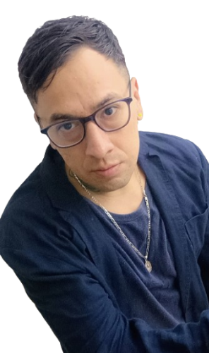

sobre mi
Soy un Ingeniero de Software especializado en C# y .NET. Actualmente continúo mi crecimiento académico en la carrera de Ingeniería en Desarrollo de Software en la Universidad Abierta y a Distancia de México (UnADM).
Me apasiona la programación y el aprendizaje constante, especialmente cuando puedo aplicar lógica, creatividad y buenas prácticas para construir soluciones eficientes y escalables. Me caracterizo por ser una persona social, empática y con sólidos valores éticos; disfruto colaborar, comunicar y crear ambientes positivos donde el trabajo fluye y las ideas crecen. Creo firmemente que el esfuerzo disciplinado y la mejora continua son los pilares que convierten a alguien en un gran profesional dentro del mundo tecnológico. Busco crecer profesionalmente y aportar valor a proyectos tecnológicos innovadores..
Fuera del código, disfruto la comida, la música, el arte, las tardes lluviosas, la naturaleza y los videojuegos, especialmente GTA Online.
